Fillit
Here we are going to break down a project called fillit
The objective of this project is to find the smallest size square or grid that a set of tetriminos can fit into.
The code for this project was also done in part with ryaoi.
Below are examples of a tetrimino.
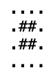
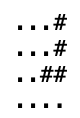
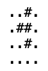
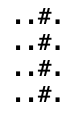
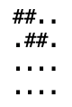
Function Flow
-
Main
-->
Stock_str
-->
Back To Main
-->
check_str
-->
validate_tetrimino
-->
count_valid_characters
-->
back to check_str
-->
back to main
-->
extract_tetriminos
-->
count_tetriminos
-->
back to extract_tetrimions
-->
convert_then_store_xy_coordinates
-->
Back to extract_tetriminos
-->
place_tetri_to_top_left
-->
back to extract_tetriminos
-->
back to main
-->
solve
-->
smallest_board
-->
back to solve
-->
tetri_map_new
-->
back to solve
-->
algo
-->
xy_tetri (*deprecated)
-->
back to algo
-->
check_tetri
-->
back to algo
-->
insert_tetri
-->
back to algo
-->
remove_tetri
-->
back to algo
-->
back to solve
-->
print_map
This project has a couple main parts that we can break it down into. First is reading the file then initializing it into a character array.
Second, we have to check the parsed string for any invalid tetriminos that are passed into the program. If any are invalid, we have to print "error" out to the terminal. If there are no errors, we then take the error-free data, then begin to parse it further into a linked list of data.
Third, in this linked list we have a struct that holds four main points of information. One being c which is to represent the character the tetrimino represents. The next being an integer array called x then an integer array called y. Both of these integer arrays are 4 numbers long. We convert the string data into (x,y) coordinates points that hold information about the # location as compared to the '.' in the block of 21 different characters. We shall get more into this once we dive into the code.
Fourth, after the linked list is built, we then pass it into a solver algorithm. This solver algorithm recursively calls the same function in the event a tetrimino fits on a new board that is created. It does this until no tetriminos are left, meaning it has found the smallest board that all the passed tetriminos can fit on. It then returns the board to be printed out for verification
Now that we have the layout or flow of the program, let's jump into the code
Main
Here we have the function main that returns an integer. This main function is the function that is ran after the program is compiled. At the top here we include our .h or header files that allow us to use any of the functions listed there within the main function itself. Next we shall take a look at the parameters passed here. We have two parameters: one is an integer called argc, another is a multidimensional array called argv. Next we declare three different variables: a character pointer stock, an integer called fd, then a t_teri called tetri. fd is short hard for file description while we shall go over what a t_tetri struct is in a moment.
The parameter argc returns the number of arguments passed to an executable. For instance, we compile our program to get an executable called run. If we are to run the executable in our terminal as such "./run file_name other". In the main function, the argc parameter would return 3. If we run "./run" argc would return 1.
In the first if statement we check to see if it is not equal two. We do this because fillit expects to be run with a file passed in after the executable is run. Example "./fillit tetramino_file" is what is expected. if the argc count is not two, we then print "usage [map]" to the terminal, then return 0, effectively ending the program.
Next we initialize fd to the value returned from the open function called from the fcntl library with two parameters. The first parameter is the index value of one in the argv character multidimensional array. argv holds a parsed character array from what is passed when calling the executable from the command line. For example, "./fillit testFile" would create an array of argv[0] = "./fillit" then argv[1]="testFile" so on than so fourth. Here we pass argv[1] as the first parameter, which should be the path to the file containing the tetriminos. The O_RDONLY parameter comes from the fcntl library, which states this is a read-only function. After we have the fd initialized to the return value, we initialize stock to the return value of stock_str() with fd as a parameter.
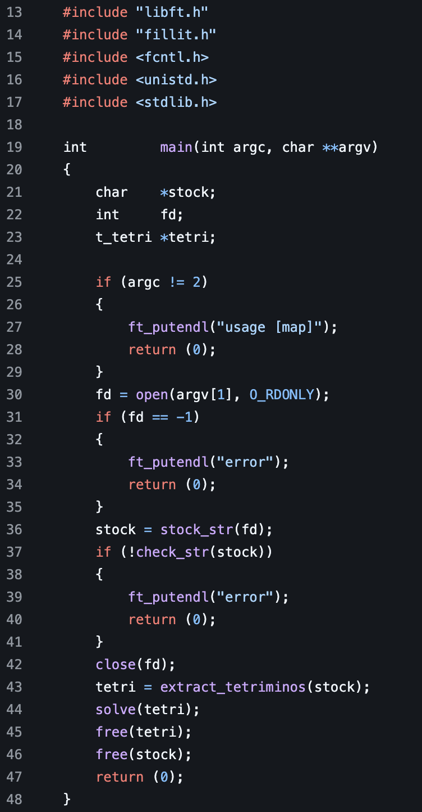
stock_str
This function is located in the read.c file. We return a character array from this function. It takes one parameter called, which is an integer called fd. We then declare four variables. One integer called read_status, then another integer called i, then another character called c, then a character array called str. We then initialize i to zero, then str to NULL, then read_status to the return value of the read() function from the fcntl library. The read function takes 3 parameters. The first one is the file descriptor returned from the open() function that describes the file path that we'll be reading from. Second is a reference in memory to where the character variable is stored that we'll be writing the information to from the file we are reading. The third is the number of characters or bytes we shall be reading at a given time.
After this, we check to see if read_status returned less than 0. If it does, we return NULL from the function. Then, we check to see if the read_status is equal to 1 which indicates a successful read. We then initialize str to a malloced string of 600 characters. This gives us the ability to read about 28 tetriminos, which is more than the max amount we need to handle for this project.
We next loop through read_status while it is not equal to a null pointer. We first set the index value of str to the character c which was read from the file. Next we iterate i. Then we call the read() function again. We set the return value equal to read_status while passing in the fd then a reference to c the character we are writing to, then a 1, which is the number of characters or bytes we are reading. By calling the read function again, this automatically moves to the next byte or character in the file we are reading in. This continues until we have all the text values from the file set to the str character pointer. One read returns a null pointe to read_status. We exit the while loop then add a null pointer to the end of the str character array. After this, we then return the str for further parsing.
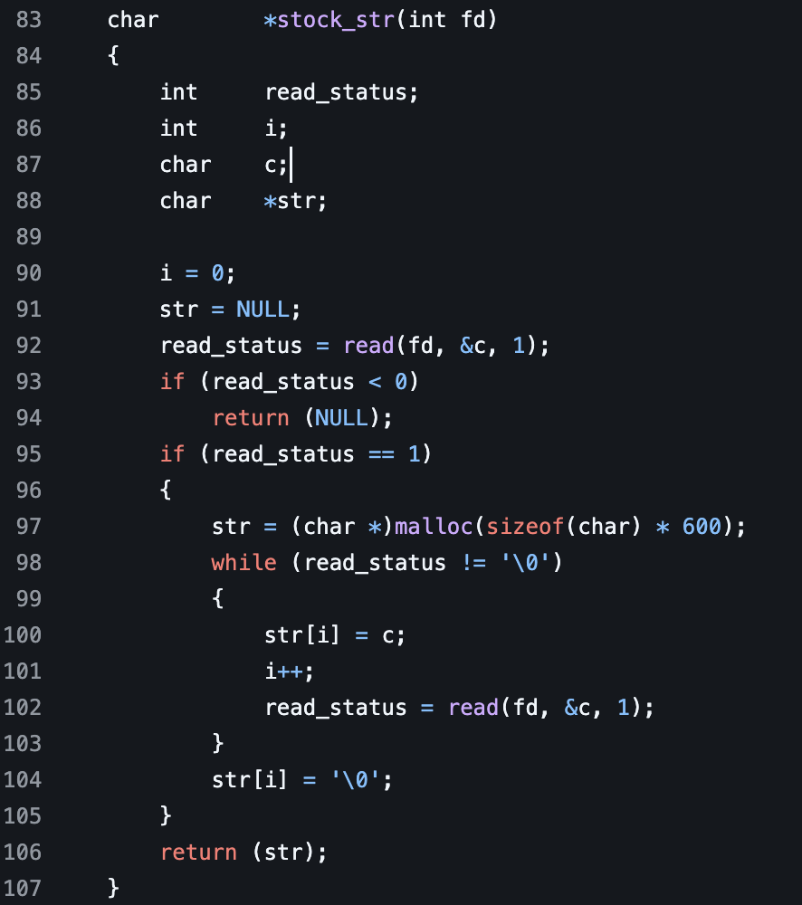
Back To Main
Now that we have the return value from stock_str() function we covered above. We then run an if statement on the return value of check_str() function with stock, which holds the return value as a parameter.
check_str
This function returns an integer. First we take a character pointer called characters_read which holds the data we read in from the file passed. Next we declare two variables. One integer j then another integer i. We initialize both of these integers to 0. After we begin a while loop that runs while the indexed value of characters_read at i + j is not equal to a null pointer.
The first if statement calls two functions. It calls the validate_tetrimino() and count_valid_characters() functions. Both take two parameters. The first parameter is a character pointer, then the second is a integer. Both functions are passed the character_read pointer and j for the integer. It then checks the return values of these functions, making sure both of them are not 0. If either of these functions returns 0, we return 0 from the function which ends its execution.
Next we are going to look at the validate_tereminion() function then the count_valid_characters() function to see how they calculate return values of 1 or 0.
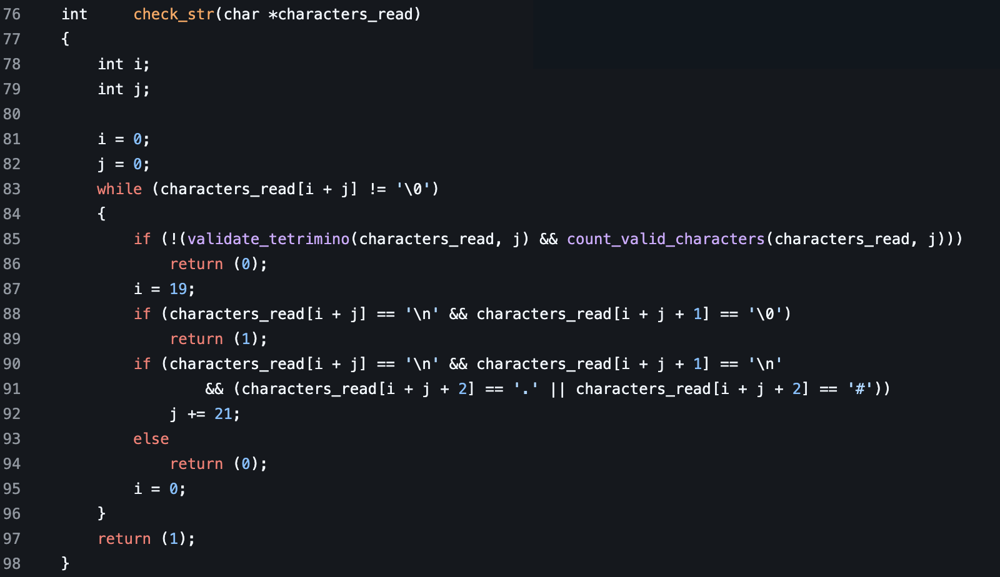
validate_tetrimino
This function returns an integer. It also takes two parameters. One is a character pointer called characters_read, another is an integer called terimino_start. We first declare two variables. One integer called count, then another integer called j. After we initialize both of them to 0.
Next we enter the while loop while j plus the tetrimino_start is less than 20 plus the tetrimino_start. We use this check because we are incrementing j for a total of 20 characters, as that is the number of characters that is held within a given tetrimino when parsed in correct formatting.
Examples of correct vs. incorrectly formatted tetriminos
correct
incorrect
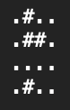
incorrect
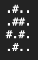
incorrect
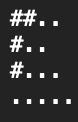
The first if statement checks if the value of the characters_read array at the index j + tetrimino. If this value is a '#' it continues through the next four if statements.
The first if statement essentially checks the character in front of the one we checked before. If this value plus 1 plus j is less than 20 plus the terimino_start index, then it is in the bounds of the tetrimino. We use the number 20 here because a single tetrimino holds a total of 20 different characters. These characters typically include '.' '#' or a '\n'. We make this statement to make sure we are checking a valid spot. Next we check to see if the next character value is equal to a '#'. If both these conditions meet, we add 1 to the count.
The second if statement checks the character behind the character we checked at the top of calling this in the first initial if statement. Next, we check to make sure j plus tetrimino start subtracted by 1 is greater than or equal to 0 plus tertimino_start. This, again, ensures we are checking a valid sport within a tetrimino. Next we check to see if the character behind it is equal to a '#'. If both these conditions are true, we then increment the count by one.
The third if statement checks the character on the next y-point. If you are unsure what y-point means, it is explained during the parsing or conversion process where we extract properly formatted data into a linked list of points. In simpler terms, we are checking the character above it on a 5 character lines. First we check to make sure it is a valid check by using j + tetrimino plus 5 is less than 20 + terimino_start again, ensuring it calls a valid point. Then it checks if the point above is equal to a '#'. If it is, we increment the count by 1.
The fourth statement checks the character below. The one we checked was equal to a '#' at the start. It usees j plus tetrimino_start subtracted by 5 is greater than or equal to 0 plus terimino_start + 0 to make sure again it is within the bounds of what a tetrimino can be. Next it checks to see if the character below it is a '#'. If it is, we then increase the count by 1.
After this, we then iterate j while doing this through each of the 20 points within the tetrimino we were checking. After if the total count increases to 6 or 8, we can safely assume it is, without a doubt, a properly formatted tetrimion. If the count is not a 6 or 8, we then return a 0, which indicates an incorrectly formatted tetrimion was passed, which in return allows us to print error while not moving further into the process.
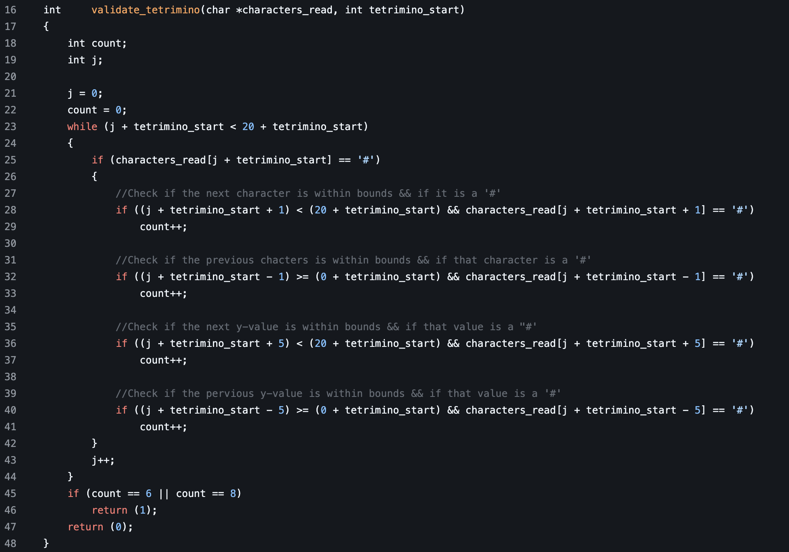
count_valid_characters
This function returns an integer with two parameters taken. One parameter is a character pointer named characters_read the next is an integer called j. First we declare four integers named dash, dot, newline, i. Next, we initialize all these variables to 0. Next we start with a while loop where we say while i plus j is less than 20 plus j and the that charcters_read character indexed at i plus j is not equal to a null pointer. Next we have three if statements. The first if statement checks to see if the character value at the index in characters_read is equal to a '#'. If it is a dash, it is incremented by one. The next one checks to see if it is a '.'. If it is a dot, it is incremented by one. The third one checks to see if it is a '\n'. If it is newline is incremented by one. After that, we then iterate i. Once the while loop is completed, checking the tetrimino, we then make sure that the dash is equal to 4 and the dot is equal to 12 and the new line is equal to 4. This makes sure we have counted 4 dashes which represent the tetrimino squares. A total of 12 dots should surround it. Then a total of 4 new lines after this.
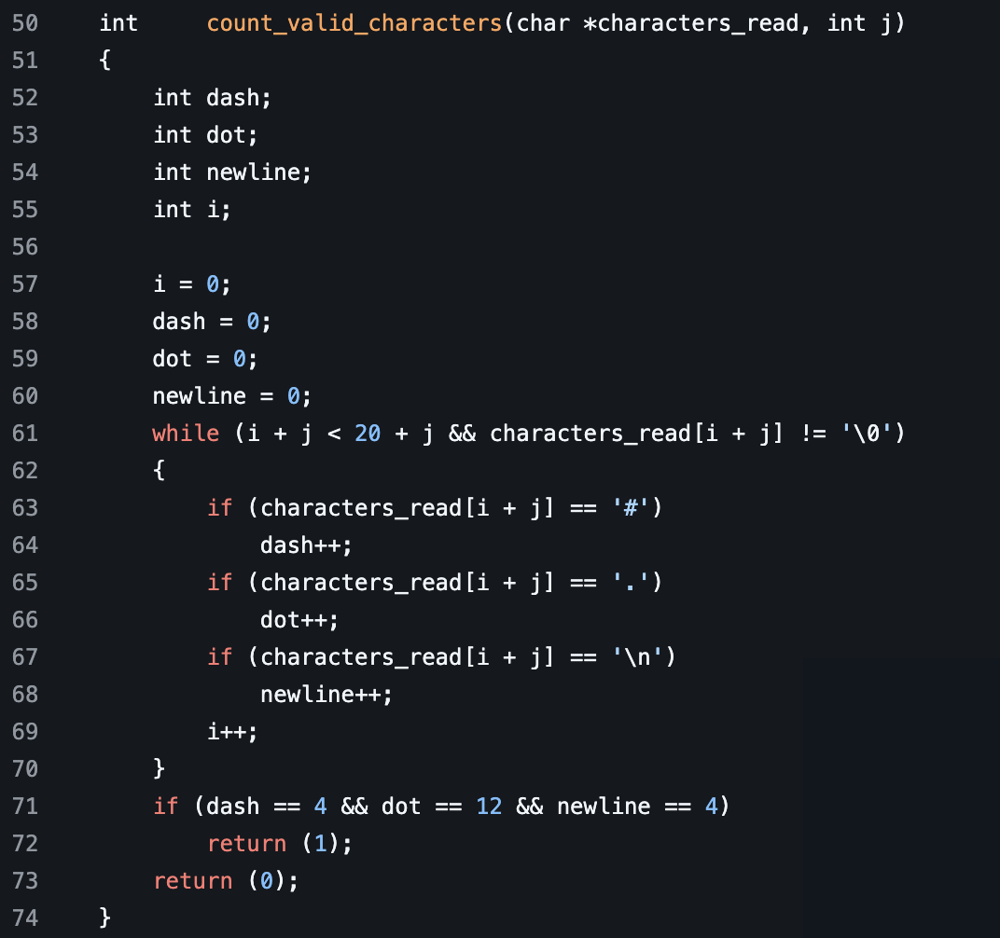
Back To check_str
Now that we have covered the validate_tetrimino() function as well as the count_valid_characters() function. If neither of those functions return 0, we then move to setting the value of i to 19. If either of those functions return a 0, we then return 0 from our functions, which gives check_str() a return value of 0, letting our system know to print an "error" while not continuing. After setting the value of i to 19, we then check in our if statement if the indexed value of characters_read at i + j is equal to a '\n' and if the characters_read indexed value at i plus j plus 1 is equal to a null pointer. If either of these conditions are true, we can assume we have made it to the end of the file without an error. We then can return 1 from our function indicating a properly formatted tetrimino file has been passed. If not, we then check to see if the character value at characters_read i plus j is equal to a newline. Then, if the character_read indexed value at i plus j plus 1 is equal to a newline, then if the value of the characters_read indexed value at i plus j plus two is equal to a '.' or if it is equal to a '#'. The first as well as the second check are true, as well as the character value being a '.' or a '#' we can safely assume that we can check the next teterimino that was passed. We then increment j by 21. We use the number 21 to represent the starting place for the next tetrimino within the array of characters that was passed. If this statement is not true, we use a else statment to return a 0, meaning the tetrimino file passed is not properly formatted. This in return allows the system to print an "error" while not continuing the program.
Back to main
Now you can see here that if the check_str function we just broke down returns a 0, then the if statement here prints an "error" to the terminal indicating an improperly formatted file was passed to the function. If it returns 1 this indicates the file was properly formatted, allowing us to move forward in the program. Next, we use the close function of the fd to close off access to reading the file we opened using the open function. After this, we then set the value of tetri to the return value of stock_tetri.
extract_tetriminos
This function returns a t_tetri pointer. A t_tetri is a struct that is defined in the fillit.h file or header file. We created a typedef struct called s_tetri. Within this struct we define four different data values. The first value is a character called c. The next value is an array of integers that is 4 values long called x. The next is an array of integers that is also 4 values long called y. Then the fourth value is a pointer to a struct _stetri called next that points to the next struct value in the linked list. We then give this struct the alias of t_tetri at the bottom.
This function takes one parameter that is a pointer to a character called validated_characters_read. Next we declare five variables. One integer called amount_of_tetrimions, another integer called tetrimino_start, a character called tetrimino_character, then a t_tetri pointer called extracted_tetrimions then a t_tetri pointer called tmp. We then initialize tetramino_start to 0 then tetramino_character to 'A'. Next we call the count_tetriminos function with the character array validated_characters_read as a parameter value.
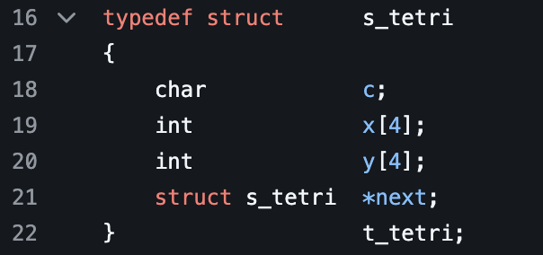
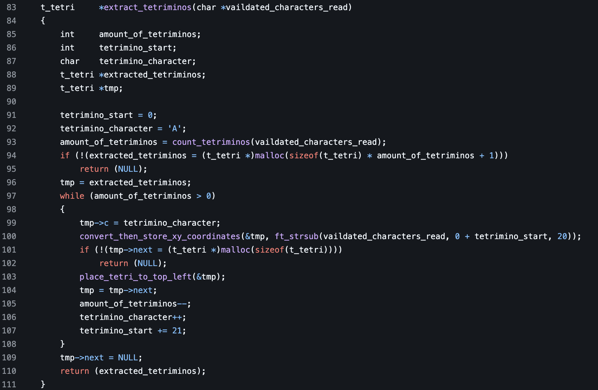
count_tetriminos
This function returns an integer. It takes one parameter, that is a character pointer called str. After we declare two integers. One is called i, the other is called result. We then loop through the indexed value of str while it is not equal to a null pointer. We then check if the character value at the index of the array is equal to a '#' sign. If it is, we increment the result by one. Then we iterate i up to one. Once the loop is done, we can divide the result by four to get the total number of tetriminos. We divide by four because we know each tetrimino is made up of four individual '#'. Meaning dividing by for would use the total number of tetriminos there is.
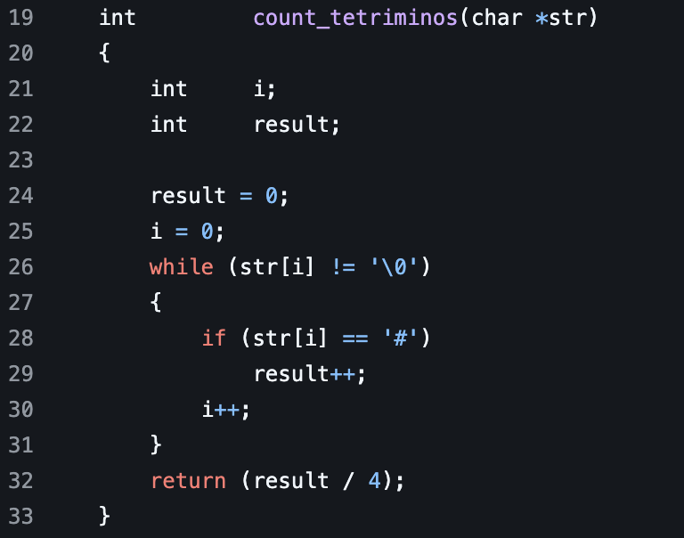
back to extract_tetriminos
After we get the return value for count_tetriminos we then initialize extracter_tetriminos. We do this by mallocing memory for it that is the sizeof at t_tetri. If it returns null, we then return NULL from the function ending the program. If not, we then initialize tmp to extracted_tetriminos. We then execute the while loop with the condition of amount_of_tetriminos is greater than 0. First we set the c value in the t_tetri temp struct to tetrimino_character. Next we call the
convert_then_store
_xy_coordinates
This function is a void. It takes a pointer to a pointer of a t_tetri called tmp. Then it takes a character pointer called trimmed_valdiate_characters_read. Next we declare two integers. One is called i the next is called j. We then initialize i and j to 0. Next, while the indexed value of trimmed_validated_characters_read at i is not equal to a null pointer, we iterate. We then check if the character value from trimmed_validated_characters_read is equal to a '#'. If it is, we then set out t_tetri tmp's x data value at the j position to i % 5. We then set the y data value at the j position to i / 5. After we iterate j.
The reason we use % 5 as well as divided by 5 is due to the fact there are 5 characters in each row of a teterimino. You have four characters that are either a '.' or a '#' followed by a new line. What this does is create a coordinate system of that particular tetrimino.
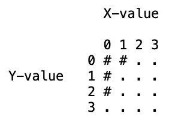
This example above shows how the coordinate system works when converting a tetrimino. The value on the y-axis corresponds to the y value. The value on the x-axis corresponds to the x value.
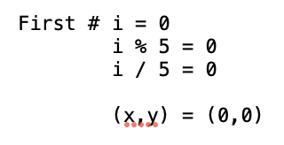
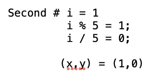
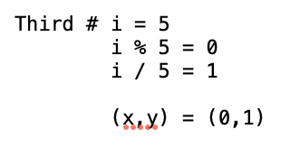
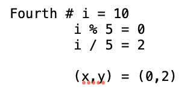
These examples above show how the math works for converting i into an x and y point. This math is the math for the tetrimino in the first example that is explaining the coordinate system
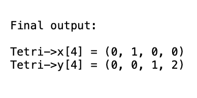
The example above shows the final output in the x and y integer arrays within a single t_tetri struct
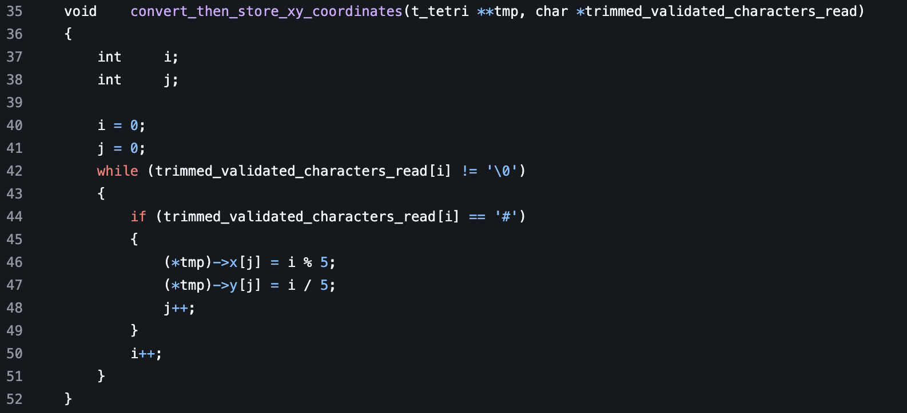
Back to extract_tetrimninos
After we convert, then store the new xy values for each tetrimino we then move forward to calling the malloc function. We initialize the new data from the tmp struct t that is a t_teri to a value of a t_teri. This next value allocates memory for the next part of the linked list. If this function returns null, we return null from the extract_tetriminos function after. Next we call the place_tetri_to_top_left function with a reference in memory to the tmp variable passed as a parameter.
*Note : This place_tetri_to_top_left function is a deviation of the original code. We use the code from the xy_tetri function however, we have moved it from being called several times in the back tracking algorithm solver to being called once on each tetromino during the data extraction phase of the program. This eliminates redundant calls as we are no longer doing it for potentially millions of times instead, we run it once.
place_tetri_to_top_left
This function is used to place the tetrimino into it's top left spot from where it was parsed. First we declare the function, which is a void function. Next we pass three parameters. One pointer to a pointer of a t_tetri called tetri. Next, an integer called x than an integer called y. After that we declare three integers. We call these integers pos_x, pos_y, then i. After we initialized these integers. We set i equal to 0, pos_x equal to 100, then pos_y equal to 100. After this, we start a while loop with the condition of i being less than 4. After that, we then check the if the value of the indexed position of the x array stored in the teteri struct is less than the pos_x. If it is we set pos_x to that value. Next we check if the value of the indexed position of the y array stored in the tetri struct is less than pos_y. If it is, we then set pos_y to that value. After that, we increment i. Once that is finished, we subtract 1 from i then begin a loop. We use this while loop with the condition of i is greater than or equal to 0. We update the tetri struct data integer array of x at the i index to the value of this value subtracted from the pos_x added to the value of x passed in the parameter. This ensures that we move the x value to the top left while maintaining the spot we are checking on the board. Next we update the tetri struct data integer array of y at the i index to the value of this value subtracted by pos_y added to y.
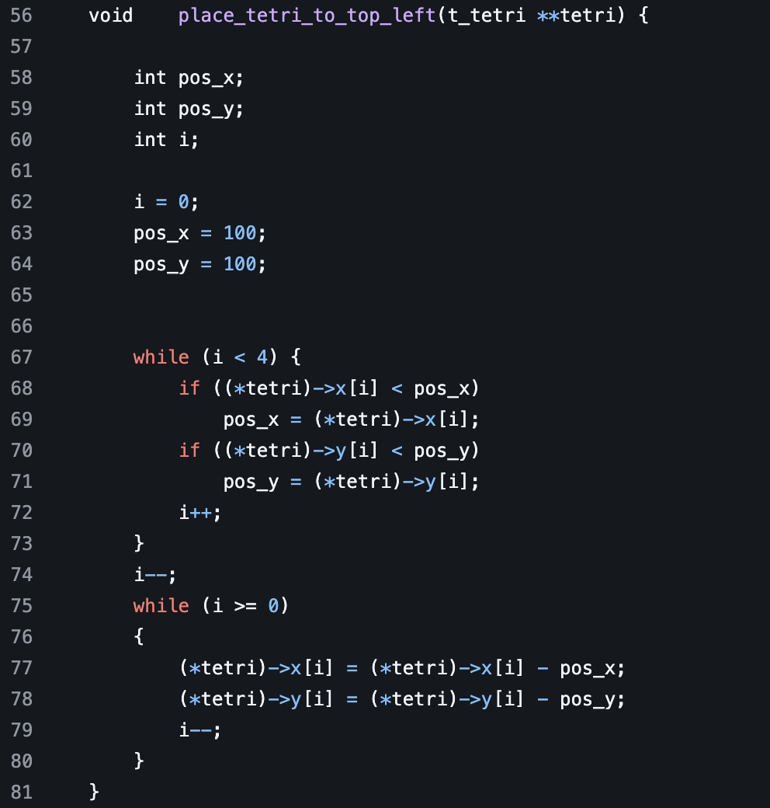
back to extract_tetriminos
After setting the values of the tetriminos to the top left. We then move forward to setting temp equal to the next value we malloced above. Then, we increment amount_of_tetriminos back by one as we have successfully converted, then stored a tetrimino. Next we increment the tetrimino_character count by one. This moves the character from an 'A' to a 'B' so on, then so fourth. After we add 21 to tetrimino_start. We use the number 21 as it represents the character length of a tetrimino once read into the system. After we loop through all the available teterimions we then exit the loop then set the next value in the linked list to NULL to signal the end of the linked list. After we return extracted_tetriminos.
Back to main
Now that we have tetri equal to the return value of extract_tetriminos we then pass it as a parameter to the solve function.
solve
This function is a void function, meaning it does not return anything. It takes one parameter, which is a t_tetri pointer called tetri. Next we declare three variables. Two multidimensional character arrays. One called result, another called tetri_map. Then we declare an integer called size. After we initialize the size to the return of the smallest_board function.
*Note: Setting size to the return of the smallest_board function is a deviation of the original code. Instead of initializing it to two, we instead use a formula to figure out the smallest possible board size a given number of tetriminos can fit into. This formula is the square root of the number of tetriminos multiplied by 4. This reduces the amount of boards we have to check drastically as we add more tetrimons. Say we have 23 tetriminos, we no longer have to check boards 2, 3, 4, 5. Instead we can skip straight to 9 boards which is a massive time saver. Saving us a large amount of operations we have to run.
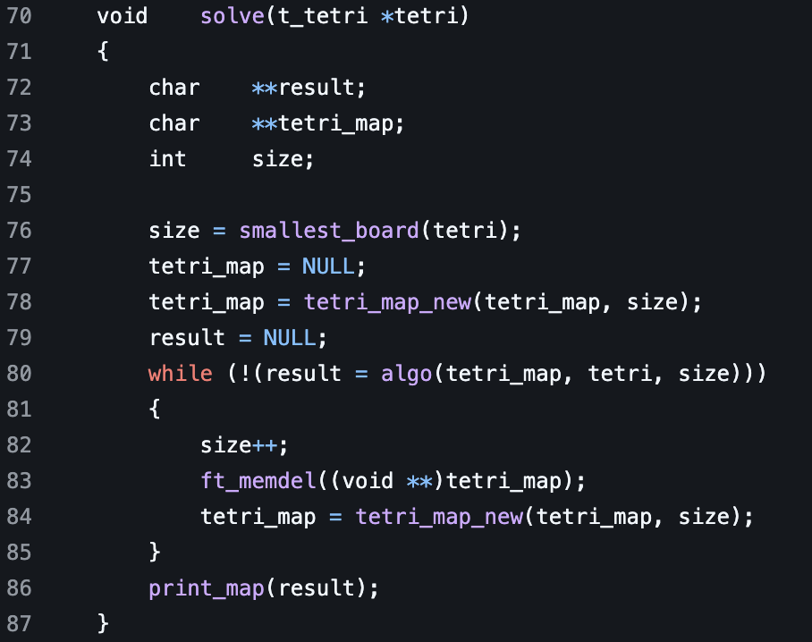
smallest_board
This function returns an integer. It takes one parameter that is a pointer to a t_tetri called tetri. We then declare four variables. Three integers named amount_of_tetri, size, and j. We then declare a pointer to a t_tetri called tmp. We then initialize the value of amount_of_tetri to 0, j to 2, then temp to tetri. Next we create a while loop with the condition of while the next data value in the tmp struct is not equal to null. The next value represents a pointer to the next struct in the linked list. While this condition is true we increment the amount_of_tetri by one. We then set the value of temp equal to the value of the next data value held in the at temp. This gives us the total amount of tetriminos we have to run the algorithm on. Next we initialize size to the amount_of_tetri multiplied by 4. We then use a while loop with the conditions of while size is greater than j multiplied by j. While these conditions are true we increment j by one. After this we then return the value of j to give us the size of the smallest possible board.
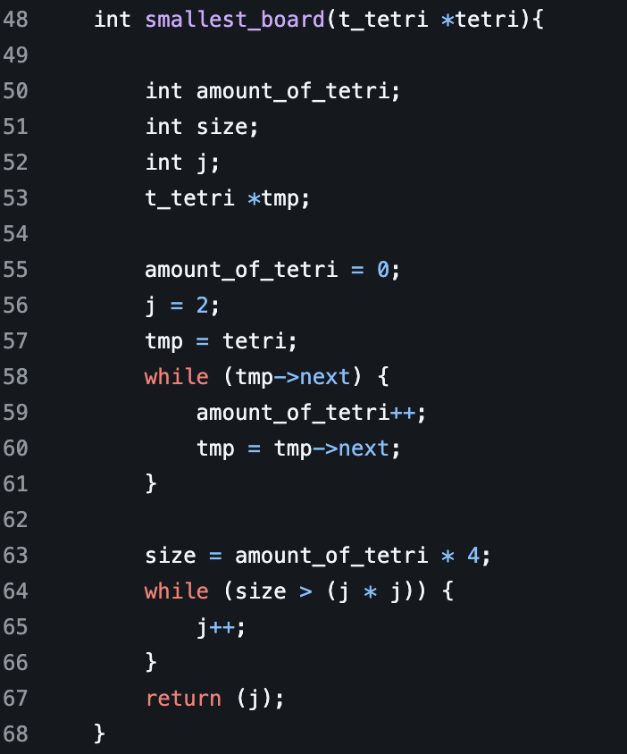
back to solve
Then tetri_map to NULL. After we set tetri_map equal to the return value of tetri_map_new with the tetri_map and size as parameters. .
tetri_map_new
This function returns a multidimensional character array called tetri_map_new. It takes two parameters, one called map that is a multidimensional character array, then another called size that is an integer. Next we declare two variables. One integer called x then another integer called y. We then set y equal to 0. Then, we initialize the map by typecasting a multidimensional character array to malloc that is the sizeof a character array multiplied by the size parameter passed plus one. If it returns null, we return null from the function. After we run a while loop with the condition that y is less than size. We then malloc a spot for the y indexed value of map by typecasting a character array to malloc that is the sizeof of a character multiplied by the size parameter passed plus one. If it returns null we then return null from the function ending the function call. Then we set the value of x equal to 0. Afterwards, we run another while loop while x is less than size. We set the yx index value of the multidimensional array of map to equal a '.' character. We then iterate x. This is essentially adding the '.' characters to the board after we allocate space for the array. After the end of the while loop, we set the final character to a null pointer to end that in particular character array. After we iterate y. We do this over than over until y is less than size. After we add a 0 to the final index value of map then we return the newly created map back to the solve function.
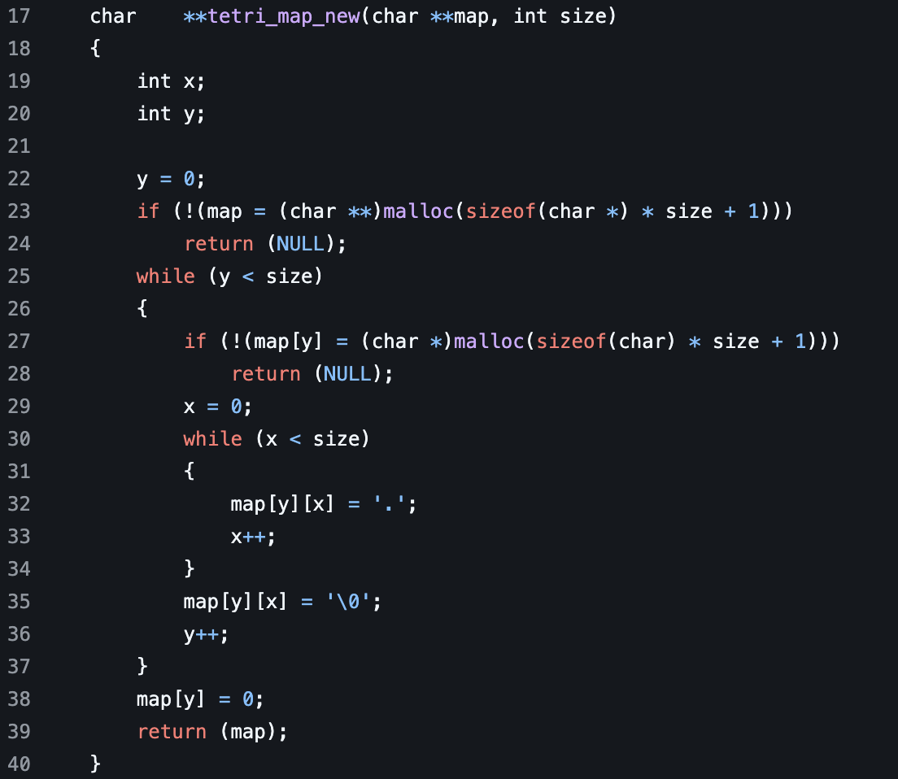
back to solve
After we set tetri_map to the return value of tetri_map_new covered above, we then initialize the result to NULL. Next we run a while loop while the return value from alog is null. We set the return value from algo to result, then use a ! to check if that value is null or not. If it is, we then increment size. Use the ft_memdel function to clear the previously allocated board. Then recall our tetri_map_new with the tetri_map and updated size as parameters. This then gets passed to algo when ran again.
algo
This function returns a multidimensional character array. It takes three parameters. The first parameter character pointer to a pointer called tetri_map. The second is a pointer to a t_tetri struct. The third one is an integer called size. We then declare three variables two integers called x, then y. Then a character pointer to a pointer called map. Next, we check to see if the next value in the tetri struct is equal to NULL. If it is we return the tetri_map from the function. This is an important check as it acts as what we call a base case in recursion. This check is used to see if all the tetrimions have been placed or not. Next, we initialize map to NULL, then y to 0. Next, we start our while loop with the condition that y is less than size. We then set the value of x to 0. Then we loop while x is less than size. We call our xy_tetri function next with the reference is memory to tetri passed as the first parameter. Then x followed by y for the second and third.
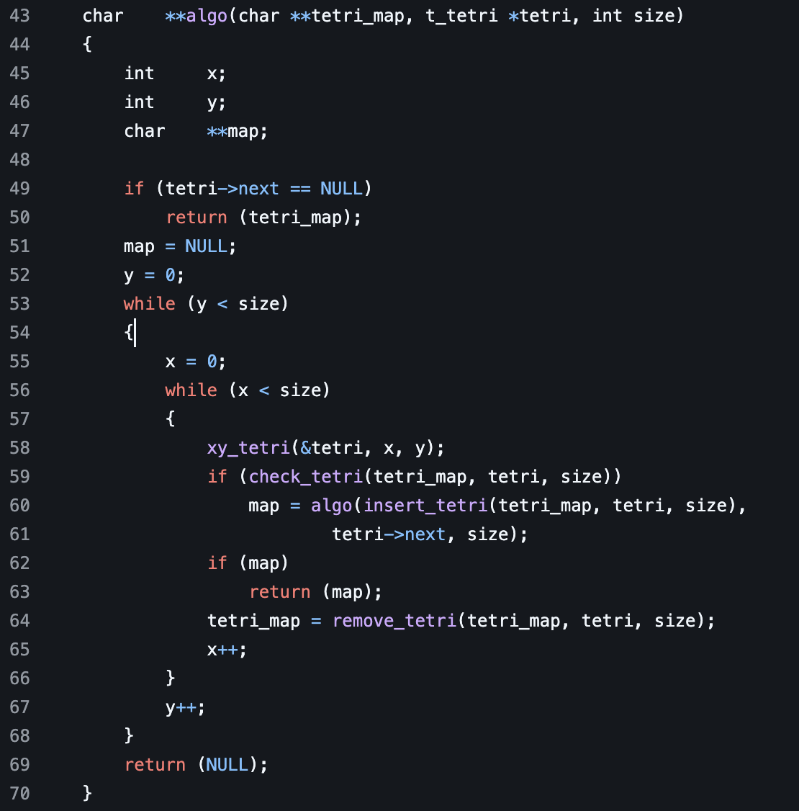
xy_tetri
This function is used to place the tetrimino into it's top left spot from where it was parsed. First we declare the function, which is a void function. Next we pass three parameters. One pointer to a pointer of a t_tetri called tetri. Next, an integer called x than an integer called y. After that we declare three integers. We call these integers pos_x, pos_y, then i. After we initialized these integers. We set i equal to 0, pos_x equal to 100, then pos_y equal to 100. After this, we start a while loop with the condition of i being less than 4. After that, we then check the if the value of the indexed position of the x array stored in the teteri struct is less than the pos_x. If it is we set pos_x to that value. Next we check if the value of the indexed position of the y array stored in the tetri struct is less than pos_y. If it is, we then set pos_y to that value. After that, we increment i. Once that is finished, we subtract 1 from i then begin a loop. We use this while loop with the condition of i is greater than or equal to 0. We update the tetri struct data integer array of x at the i index to the value of this value subtracted from the pos_x added to the value of x passed in the parameter. This ensures that we move the x value to the top left while maintaining the spot we are checking on the board. Next we update the tetri struct data integer array of y at the i index to the value of this value subtracted by pos_y added to y.
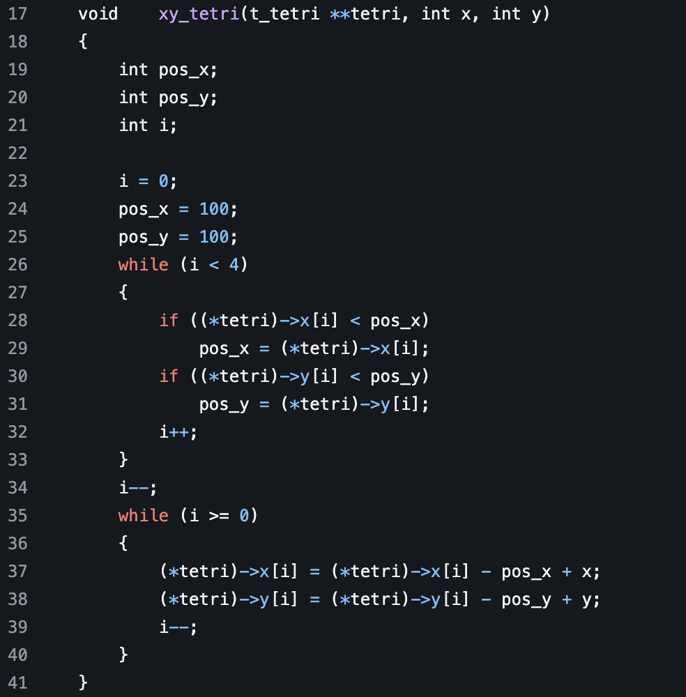
back to algo
After out tetri is in the proper position. We then continue to call the check_tetri function. If this function we are about to explain returns 1, we then move on to call the function recursively. If it returns 0, we skip this, then move to check if map is null or not. If it is not null, we then return map otherwise we will continue to set tetri_map equal to the return value of remove_tetri. After this we increment x
check_tetri
Check_tetri is a function that returns an integer. It takes five parameters. One parameter is a pointer to a pointer of a character called map. The next is a pointer to a t_tetri called tetri. The next are three integers called x, y and size. Map represents the board we are passing to check if the tetri can be placed on. The tetri is the struct that holds the x and y coordinates of the tetri for the top left most position. X represents the column we are on when checking. Y represents the row we are on when checking. Size represents the length and width of the board or map. After this we declare four integers called i, j, t_x, and t_y.
Next we initialize all these integers to 0. Next we declare a while loop with the condition that is j is less than 4. Next we set the value of t_x to the x value at the index of j within the integer array x stored at the tetri we passed. We do the same with t_y except for the y integer array. Next we make sure the check is not out of bounds by using the if statement. We are saying if t_y + y is greater than size minus one we are out of bounds therefore we can not place the tetri or if t_x is greater than size minus one we are out of bounds on the column. If either of these are true we return 0 indicating we can not place the tetrimino on that spot on the board. Next we use an else if statement that checks that if the index value of map at y + t_y then x + t_x is not equal to a ‘.’ and it is not null. What we are doing is using the value of y, which is the current row we are checking, along with the value of x, which is the current column we are checking, then adding them to the coordinates we have stored in our x and y arrays within the tetri struct we parsed data from earlier. This is important to know as it is much different than checking every spot on the map we passed. In the previous example we check every spot on the map again whereas in this once we are strictly checking the 4 spaces we need to check rather than 100+ on a board of 10 or larger. This makes the algorithm substantially faster as it eliminates redundant checks. If the spot is not equal to a ‘.’ we return 0 indicating that there is already another tetromino placed there. Next we check if that spot is equal to a ‘.’ and that it is not null. If that is true, we have found a safe spot for the tetri. We then iterate i by one then continue looping through j. Once j is no longer less than 4, we then exit the while loop indicating we have checked all four spots on the tetri. We then check if the value of i is equal to 4. This would indicate that all 4 tetri’s fit on the board. If this is true we return a 1 signaling that we have found a success spot to insert our tetri. Otherwise we return 0 indicating we have not found a spot that would work for all four tetri.
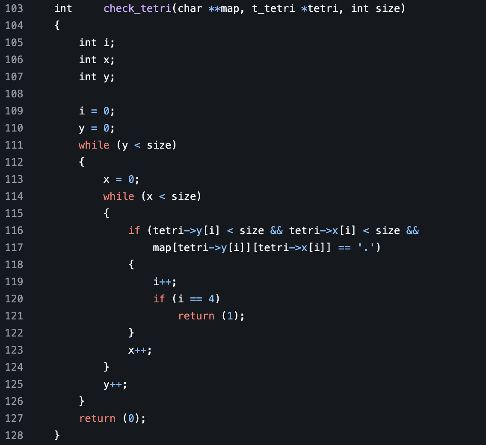
back to algo
Depending on the return value of the function above, we decide whether to call the algo function. If we find a valid place for our tetri we then set the map equal to the return value of algo. We pass the return value of insert_tetri with tetri_map, tetri, size function of which we shall cover next. This function places the tetri on the map. Then, for the second parameter, we pass the value of the pointer to the next data type within the tetri struct. This value points to the next struct in the linked list. For the final parameter we pass size.
insert_tetri
This is a void function. It takes four total parameters. One is a pointer to a character pointer called map. Another is a pointer to a t_tetri called tetri. Then two integers called y and x. Next we declare an integer called i. We then initialize it to 0. Next we start a while loop with the condition of i being less than 4. Next we call the index value of y plus the index value of i at the y integer array on the tetri struct. Then x plus the index value of i in the x integer array held by the tetri struct. We then set this value equal to the value of the c character held within the tetri struct. We are doing this to place the tetri on the map after we found a valid spot. This is more efficient than the old method as we are inserting the tetri directly to the board rather than looping through the entire thing. This saves lots of calculations as the board grows in size.
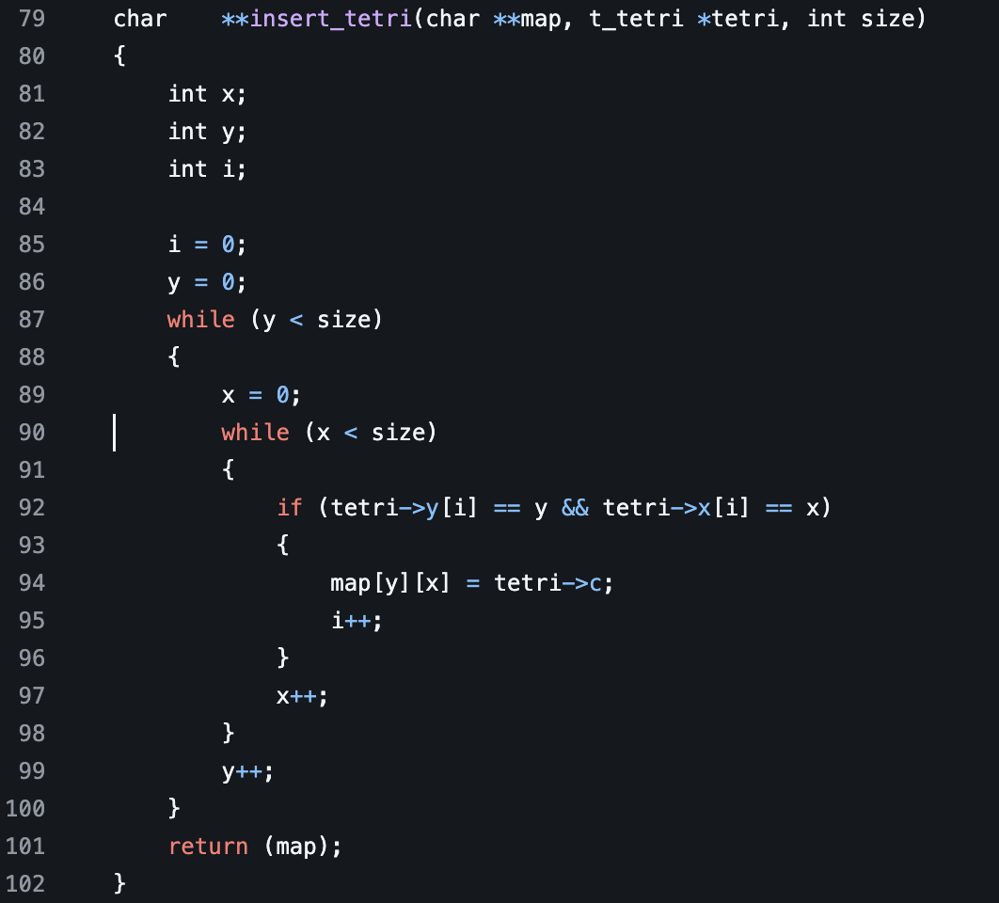
back to algo
Again, depending on the return value of check_tetri we either recursively call the function or we do not. Either way, we move to check if map is null or not, if it is not null, we return it. We then set the value of tetri_map to the value of remove_tetri which effectively removes the tetri that was placed on the board.
remove_tetri
This function returns a pointer to a pointer of a character. It takes three parameters. A pointer to a pointer character called map. A pointer to a struct called tetri. Then an integer called size. After this, we declare two integers. One called x, another called y. We then initialize y to 0. Then, while y is less than size, we loop. Next, we set x equal to 0. After this, we loop through x while it is less than size. We then use an if statement to check if the character value of map at the y and x indexed values is equal to the tetri character. If it is we then set that value to a '.' which removes it from the board. After this, we iterate x, then iterate y until we have had y become greater than size. After we return the map variable which contains an updated map that no longer has those characters.
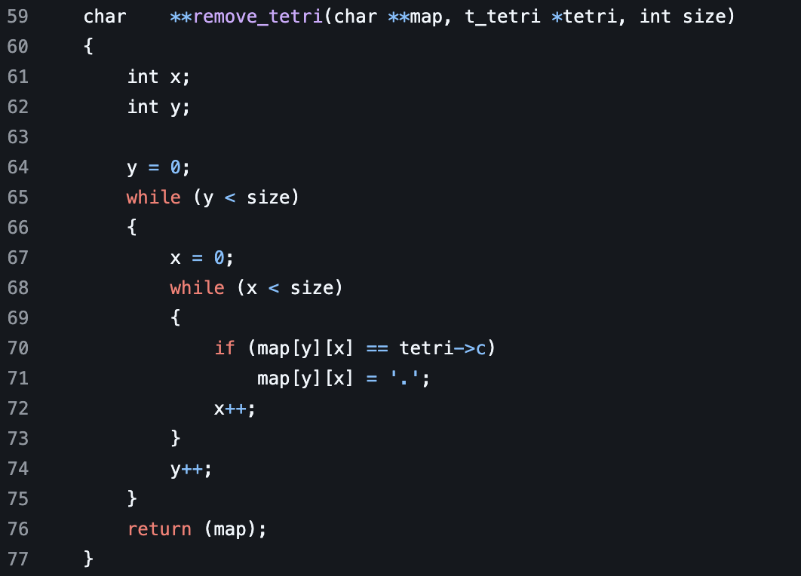
back to algo
We then continue calling this function until either the value of y reaches larger than size, which would return the value of NULL, which would cause our solver function to increase the size of the board or the size parameter, then try this function again. If we return the next value within the given tetri struct in the algo parameters with the value of it being null. We then return the tetri_map. This means all the tetrimions have been placed on the map. This returns a valid solution instead of null. This solution is then returned from algo which leads us back into the solve function.
back to solve
Once algo returns a board and it is not null. We exit the loop that increases the size of the board. After that, we then print the result, which should have the answer.
print_map
This function is a void. It takes a pointer to a pointer of a character as a parameter. Next we initialize i. After we check if the value of the map parameter that was passed is equal to null. If this is true, we call the ft_putendl function to print error out to our terminal. After that, we call return, which ends the function. Next, we initialize i to equal 0. After this, we loop through the indexed value of map while it is not equal to 0. While it is not equal to 0 we use ft_putendl function with the map value along with the index passed as a parameter. This shall print out the pointer to a character withing the map array to the screen. After this, we increment i. Once this loop is finished, the final solution should be printed out to the terminal.
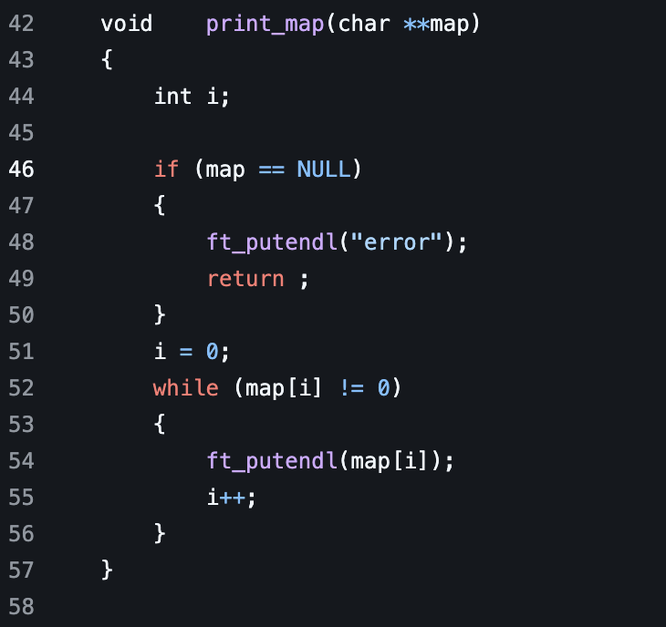